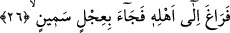
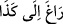

İbrahim, “Bunlar, yabancılar, (bilinmedik kimseler)” dedi. Bu fiilin asıl mânâsı
“kalbin tasavvur edemediği şeyi reddetmesidir” ki bu bir nevi cehldir. “Nekr” fiilinin,
“Yusuf kardeşlerini tanıdı; fakat onlar Yusuf’u tanımıyorlardı” (Yusuf 12/58)
âyetindeki kullanımı bu mânâya işâret eder. Müfredât’da da “münker” kelimesine bu
mânâ verilmiştir. O halde âyetin bu kısmının takdiri şöyle olur: İbrahim (a.s)
yanındakilere hissettirmeden içinden: “Bunlar tanımadığımız, hiç bir kimse tarafından
bilinmeyen kimseler” diye mırıldandı. Hûd suresinde yine İbrahim (a.s.)’ın kendisine
gelen melek elçilerle ilgili olarak “durumlarını beğenmedi....” (Hûd 11/70) tâbirinde
de sadece “o insanın durumunu, görüntüsünü beğenmediği” anlamı verilmiştir.
Dolayısıyla fiil, bu iki yerde biri diğerinden farklı bir mânâda kullanılmıştır. Nitekim
gelen melekler, insanların sâhip olduğu durum ve şekillerin dışında farklı bir
yapıdaydılar.
Ebu’l-Âliye’ye göre İbrahim (a.s), onların selamını anlamamış, o zaman ve o
bölgedeki kâfir kavmin arasında böyle, müslümanların birbirlerine verdiği selam gibi
bir selam tarzı bulunmadığı için onların bu sözünü “selâm hâ” gibisinden garipseyerek
içinden tekrarlamıştır.
Kâşifî şöyle demiştir: Yâni suret ve boy olarak asla sizin gibi bir topluluk görmedim.
Söyleyin bana sizler kimlersiniz? Onlar şöyle dediler; “biz misâfirleriz.”
26. Hemen ailesinin yanına giderek semiz bir dana (kebabını) getirmiş,, “gizlice bir yöne meyletmek” demektir. “Gizlenme” anlamı ravğ kelimesinin
içeriğinde mevcuddur. Yâni, İbrahim (a.s) konuğundan gizlice âilesinin yanına gitti.
Çünkü ev sâhibinin, misâfirine ikram yapacağı zaman, misâfirinin kendisini bundan
menetmesine veya yemeğe ihtiyacı olmadığı noktasında mâzerette bulunmasına fırsat
vermemek yahut misâfirini bekler halde bırakmamak için kendisine hisettirmeden
ağırlamada çabuk davranması âdâbdandır.
Hikâye edildiğine göre meşâyıhtan birine bir konuk gitmiş. Şeyh mürîdine işâret
ederek yemek getirmesini söylemiş; ama mürid yemeği çok geç getirmiş. Onların yanına
girdiğinde şeyh ona geç getirmesinin sebebini sorunca, mürid: “Sofranın üzerinde bir
karınca gördüm. Onu oradan çıkarıncaya kadar bekledim” demiş. Bunun üzerine şeyh:
“Aferin, edebe uygun olanını yapmışsın” demiş. Bu durumu o şeyhten daha yüksek
makama sâhip bir başka şeyh haber alınca ona şöyle demiş: “Senin mürîdin edebe uygun
olanı yapmamıştır. Çünkü misâfire ikramda çabuk olunması edeptendir. Dolayısıyla
misâfirin hakkı, karıncanın hakkından daha önceliklidir. Bu yüzden de müridin o
karıncayı sofradan alıp acele ederek sofrayı getirmesi gerekirdi.”
“Semiz bir dana (kebabı) getirdi.” Fiilin başındaki fâ harfi “fâ-i fasîha” olup bununla